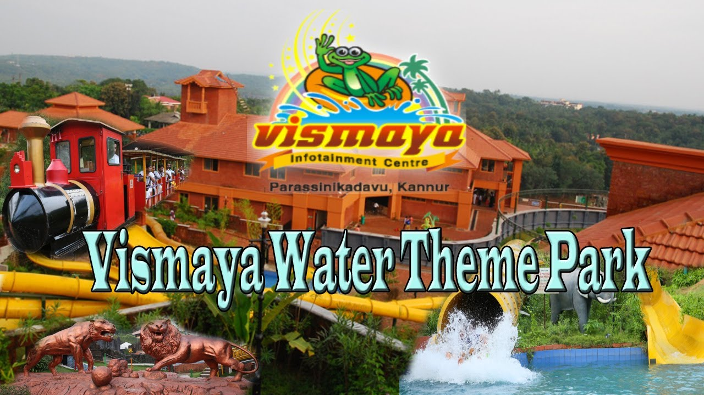
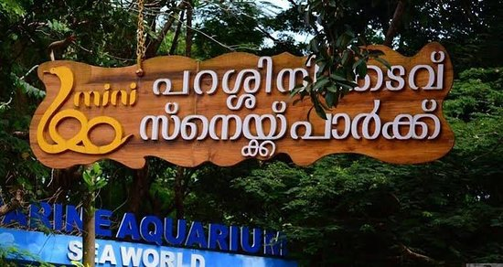

Vismaya Water ParkVismaya Water Park is one of the most visited tourist places in Kannur. The water park found its way into the limelight in the year 2008 by the Malabar Tourism Development Co-operative Limited (MTDC) and since then it has been boasting with its world-class architecture of splash pools, amusement rides, restaurants, casual shops, prayer halls, and conference halls that the tourists enjoy. Also, the park’s amazing interior adds to the beauty of the infrastructure and sets the perfect ambience for the visitors. |
 |
Parassinikkadavu Snake ParkOne of the most curious Kannur tourist places is the snake park in Parassinikkadavu. The park houses over 150 species of reptiles ranging from crocodiles to lizards and snakes, along with endemic and migratory species of rare water birds. Wildlife enthusiasts and animal lovers will find it extremely satisfying to enjoy the array of animals and their admirable traits. You will be left awestruck watching the delightful traits of these animals. |
 |